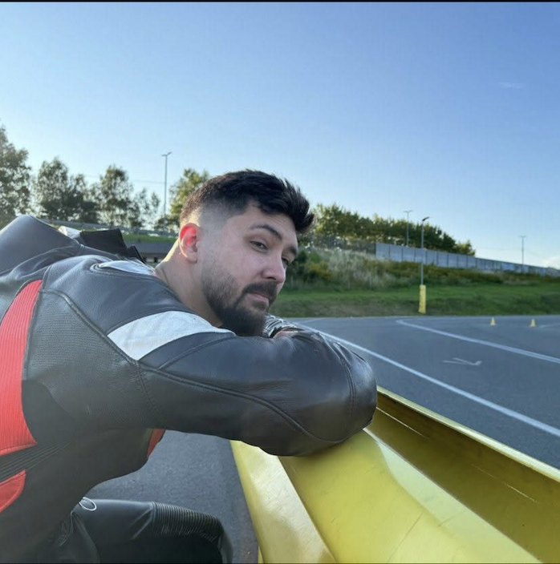

Roy Yosuf Andersen, var en 35 år gammel motorsykkelentusiast som omkom i en motorsykkelulykke på riksvei 22 øst for Lillestrøm kommune. Ulykken skjedde i en S-kurve der motorsykkelen hans traff autovernet. Luftambulanse og redningsmannskaper ankom raskt til stedet, men livet hans sto ikke til å redde.
Roy blir av venner og familie beskrevet som en inkluderende, varm og familiekjær mann, som spredte glede rundt seg. Søsteren hans forteller Nettavisen at han var en gledespreder med et stort nettverk i motorsykkelmiljøet, og at han levde livet sitt fullt ut, Han var en trygg og erfaren sjøfør, som tok kjøringen seriøst og viste hensyn til alle på veien.
En bekjendt av Roy Andersen fortalte i et intervju at ulykken ble et brutalt minne om hvor sårbar man er på to hjul. «Han var et veldig trivelig og ikke minst inkluderende menneske. Roy var en dyktig sjøfør, men selv han gikk det galt med. Det viser at man ikke er udødelig, ulykker kan skje hvem som helst» sier den bekjente.
Ulykken skjedde på en veistrekke som er omtalt som en veldig krevende og risikofylt vei. Bare noen måneder tidligere hadde det vært en annen ulykke i samme området, etter disse ulykkende bare måneder mellom hverandre har både politiet og Statens vegvesen begynt å kartlegge årsakene og eventuelle sikkerhetstiltak som skal gjøres på dette strekket.
Et bilde av ulykkestedet dekorert med blomster og et kors

Bilde av oppmøtet på minnestunden etter roy sin ulykke.
Roy Yosof Andersen vil bli husket som en mann med mye lidenskap for motorsykkel, menneskene rundt seg og hans vilje om at alle skulle være inkludert i fellesskapet. Hans bortgang satte dype spor hos de som kjente han, men han skapte også et sterkt samhold som vet hvor viktig det er å ta vare på hverandre. Vi har kontaktet to pårørende i saken for å høre mer om samholdet i gruppen.
Bak visiret
En bekjent av Roy Yosuf Andersen, og en erfaren fører i samme MC-miljø, forteller her om kulturen, det dype samholdet og hendelsen som merket han for livet.
For denne føreren, og som for mange andre i miljøet, startet det hele med en drøm om frihet. Han beskriver en helt spesiell følelse av å sitte på en liten, men samtidig ekstremt kraftfull maskin. «Ha flere hestekrefter mellom bena, enn det folk flest har under pansret, kan rett og slett ikke beskrives – det må oppleves» flirer han videre.
I miljøet handler kjøringen om mer enn bare transport, det handler om mestring. Føreren snakker om «aktiv kjøring» som for han betyr å kjøre med full fokus og jevn flyt. «Målet er å løfte blikket, posisjonere kroppen å gli gjennom svingen»

Sjåføren legger ikke skjul på at denne lidenskapen har en mørk side. Han innrømmer å ha kjent på et indre press, når farten i gruppen blir for høy. «ikke et press fra andre, kun et indre brennende ønske om å prestere» Han forteller ærlig at denne følelsen kan føre til dumme valg, og det folk flest vil klassifisere som villmannskjøring.
videoen er sensurert for å holde førerene sin identitet skjult...
Ulykken til Roy ble en brutal påminnelse om nettopp dette. Føreren gjentar, at selv en ekstremt dyktig og erfaren fører ikke er udødelig. Hendelsen beviser at ulykker kan ramme hvem som helst, uavhengig av ferdigheter. Ytre faktorer som andre trafikanter eller forhold på veien, vil alltid være en del av risikobildet.
Statistikk lyver ikke
I 2024 omkom 20 motorsyklister på norske veier. Det er like mange som i 2023. Til sammenligning gikk det totale antallet drepte i trafikken ned (fra 110 til 90). Men tallet for motorsyklistene har dessverre holdt seg stabilt høyt. Hvor farlig er det egentlig? Tallene fra Norge viser at motorsyklister er betydelig overrepresentert i ulykkesstatistikken.
Oversikt over antall drepte i trafikken 2023 og 2024 publisert av statens vegvesen. "https://www.vegvesen.no/nn/om-oss/presse/aktuelt/2025/01/90-omkomne-i-trafikken-i-2024/"
Oversikt over antall drepte og skadede motorsyklister og mopedister 2020-2024 publisert av statens vegvesen. "https://www.vegvesen.no/nn/om-oss/presse/aktuelt/2025/01/90-omkomne-i-trafikken-i-2024/"
Årsakene er fart og svinger
Når vi ser nærmere på ulykkene, er det to ting som peker seg ut: utforkjøringer og møteulykker. Over halvparten av de som dør på tunge motorsykler, dør i eneulykker ofte utforkjøringer i svinger.
Forskning viser at høy fart og risikofylt kjøring, "ekstrematferd" er en årsak i hver tredje dødsulykke med tung motorsykkel.
Statistikken viser dessverre at unge førere er overrepresentert i dødsulykkene. For 16- og 17-åringer som kjører lett motorsykkel er risikoen for å omkomme tolv ganger høyere enn for unge mannlige bilførere. Denne gruppen står ofte bak ulykker der høy fart er årsaken, det er lett å tenke at fart er spennende, men tallene viser at den høye risikoen mange unge tar, dessverre har en alt for høy pris. Hvorfor er det slik at de som har livet foran seg, ender opp med den høyeste risikoen på veien?
Spiller sosiale medier en rolle?
Enkelte peker på at sosiale medier er en medvirkende faktor i ulykkesutviklingen. På plattformer som TikTok og YouTube har man sett en markant økning i videoer som glorifiserer risikofylt kjøring.
Det er grunn til å tro at eksponeringen for slikt innhold kan være en faktor til at denne typen kjøring blir normalisert blant unge. Når innholdet deles uten å synliggjøre de alvorlige konsekvensene ved en ulykke, senkes terskelen for å eksperimentere med fart og spenning i den virkelige verden. For å forstå hvorfor noen likevel tar sjansen, må vi møte noen som lever midt i risikoen.
Motoren brøler gjennom en svingete vei utenfor Halden, i svingen ligger Erik med kneet sitt plantet mot asfalten og fartsmåleren viser et tresifret tall. «Jeg kjører stygt uten lappen» sier han - og ler. Erik er en 20 år gammel gutt fra Oslo som studerer i Halden, et sted han ikke er svært begeistret for «Halden er et jævla dritt-sted».
For noen måneder siden hadde Erik kjørt motorsykkel og blitt stoppet av politiet for å ha kjørt godt over fartsgrensen, som endte med at han mistet førerkortet. Selv etter at politiet tok førerkortet for råkjøring i sommer, har han fortsatt å kjøre, både motorsykkel og bil. Han kaller det «Nødvendig» og begrunner det som «Det går nesten ingen busser her, og jeg orker ikke sitte stille hele dagen».
I starten var det litt spennende å kjøre, forteller Erik. Etter fratagelsen av førerkortet kjørte han roligere, med litt mer puls og adrenalin i kroppen. Nå er det annerledes. «Jeg tenker ikke over at jeg ikke har lappen lenger, jeg kjører som før.» Forteller Erik mens han trekker på skuldrene
For Erik har det ulovlige blitt en rutine, det å sette seg bak rattet på bilen er like normalt som å dra på butikken. Han innrømmer at han burde være redd for å bli tatt igjen, men han sier at det ikke lar det stoppe han. «Jeg kan ikke leve livet å være redd hele tiden» sier han å ler.
Erik vet at han risikerer mye, hvis noe skulle skje så er han «Jævla fucked» sier han. Forsikringen hans gjelder jo ikke uten førerkort. Likevel mener han at det stort sett går fint. Han forteller at han flere ganger har kjørt forbi politibiler uten å stoppe. «Er de bak meg, må jeg jo stoppe, men er de i motsatt kjørefelt så kjører jeg bare videre.» For Erik handler det mer om flaks enn frykt
For kort tid siden havnet kompisen til Erik i et autovern i løpet av en tur de kjørte, Erik sier at dette ikke endret perspektivet hans heller: «Han pusha for hardt, man kjører mitt eget løp.» Han vet om at neste gang han blir stoppet av politiet uten lappen kan det bety fengsel, men han legger ikke skjul på at han fortsatt kjører som før. «Jeg burde vente, men lovene i Norge er helt syke. Jeg har ikke tid til å gå rundt å vente et år på å få lappen tilbake.» sier Erik frustrert.
Bak gatene i Halden hører man fortsatt motoren ruses, Erik har ingen planer om å parkere sykkelen. For han er friheten bak styret på motorsykkelen verdt mer enn reglene som skal følges. Han sier han skal ta lappen en dag. Men inntil den tid fortsetter han som før «Jeg klarer ikke å la være» sier han, og fortsetter å kjøre videre. Men hjemme sitter en bekymret familie.